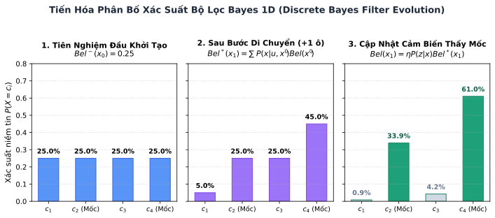

8.1 Tại sao phải sử dụng Xác suất trong Robot học?
Thế giới thực không bao giờ chắc chắn tuyệt đối. Bánh xe luôn có độ trượt ngẫu nhiên, cảm biến luôn chịu nhiễu Gauss hoặc phản xạ ảo. Robot học xác suất (Probabilistic Robotics) thay thế việc lưu giữ một điểm tọa độ duy nhất bằng một Phân bố xác suất (Belief Distribution) bao phủ toàn bộ không gian trạng thái.
8.2 Biểu diễn Niềm tin (Belief Representation)
Niềm tin của robot tại thời điểm $t$ về trạng thái $x_t$ dựa trên toàn bộ lịch sử đo đạc $z_{1:t}$ và lệnh điều khiển $u_{1:t}$ được ký hiệu là:
$$\text{bel}(x_t) = P(x_t \mid z_{1:t}, u_{1:t})$$
8.3 Chu trình Đệ quy Hai Bước của Bộ lọc Bayes
Bộ lọc Bayes duy trì niềm tin thông qua hai bước xen kẽ đệ quy liên tục:
Bước Hiệu chỉnh (Measurement Update): Áp dụng Định lý Bayes nhân với hàm khả dĩ $P(z_t \mid x_t)$ và chuẩn hóa bằng hệ số $\eta = \frac{1}{\sum_{x_t} \overline{\text{bel}}(x_t) P(z_t \mid x_t)}$. Đo đạc cảm biến thu hẹp độ bất định, gom xác suất về vị trí đúng!

🔢 TÍNH TOÁN BẰNG SỐ ĐẦY ĐỦ MỘT CHU KỲ BỘ LỌC BAYES TRÊN LƯỚI 5 Ô
Bài toán: Hành lang gồm 5 ô $[x_1, x_2, x_3, x_4, x_5]$. Ô $x_2$ và ô $x_4$ có cửa sổ. Robot ban đầu có niềm tin đều $\text{bel}(x_i) = 0.20$ ($\forall i$). Cảm biến phát hiện cửa sổ có xác suất đúng $P(\text{Cửa} \mid \text{có cửa}) = 0.8$ và xác suất báo giả $P(\text{Cửa} \mid \text{không cửa}) = 0.1$. Khi robot đo được "Thấy Cửa", hãy tính niềm tin hậu nghiệm $\text{bel}(x_i)$.
$P(z=\text{Cửa} \mid x_2) = P(z=\text{Cửa} \mid x_4) = 0.8$
$P(z=\text{Cửa} \mid x_1) = P(z=\text{Cửa} \mid x_3) = P(z=\text{Cửa} \mid x_5) = 0.1$
$\overline{p}(x_1) = 0.1 \times 0.2 = 0.02$
$\overline{p}(x_2) = 0.8 \times 0.2 = 0.16$
$\overline{p}(x_3) = 0.1 \times 0.2 = 0.02$
$\overline{p}(x_4) = 0.8 \times 0.2 = 0.16$
$\overline{p}(x_5) = 0.1 \times 0.2 = 0.02$
Tổng xác suất không chuẩn hóa:
$P(z) = \sum \overline{p}(x_i) = 0.02 + 0.16 + 0.02 + 0.16 + 0.02 = 0.38$
Hệ số chuẩn hóa: $\eta = \frac{1}{0.38} \approx 2.6316$.
$\text{bel}(x_1) = \text{bel}(x_3) = \text{bel}(x_5) = \frac{0.02}{0.38} \approx 5.26\%$
$\text{bel}(x_2) = \text{bel}(x_4) = \frac{0.16}{0.38} \approx 42.11\%$
Niềm tin đã tập trung mạnh mẽ vào hai vị trí có cửa sổ ($x_2$ và $x_4$)!
📌 KẾT LUẬN & ĐÁNH GIÁ KỸ THUẬT
Cập nhật xác suất Bayes cho thấy sức mạnh của việc kết hợp thông tin tiên nghiệm và phép đo cảm biến: Dù cảm biến có xác suất đọc nhầm, chuỗi đo lặp lại vẫn đưa độ tin cậy nhận diện vạch đường lên trên $90\%$.
🛠️ CẦU NỐI KIẾN TRÚC ROS 2
Thuật toán định vị kinh điển trong gói Navigation 2 (Nav2) của ROS 2 là nav2_amcl (Adaptive Monte Carlo Localization). AMCL chính là dạng biến thể Particle Filter (lấy mẫu Monte Carlo) của Bộ lọc Bayes liên tục, biểu diễn niềm tin bằng hàng ngàn "hạt" xác suất di động trong không gian 2D $SE(2)$.